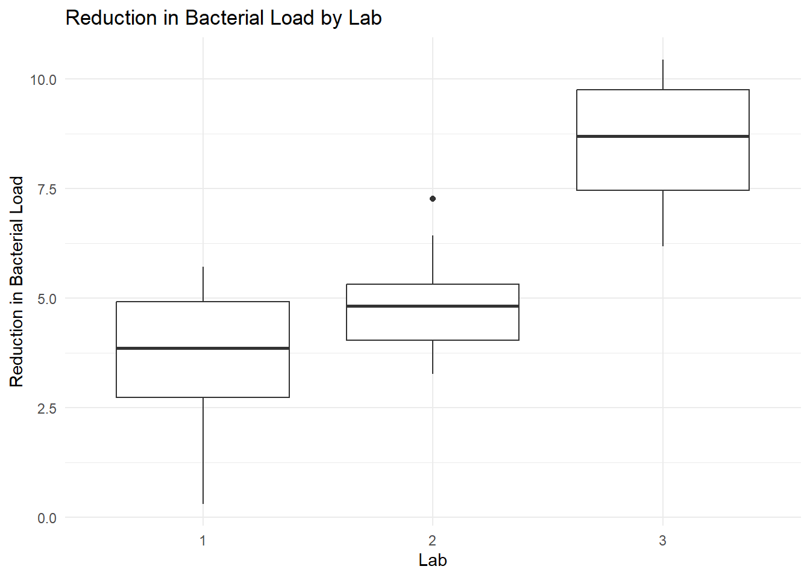

# Set seed for reproducibility
set.seed(789)
# Define clinics, labs, nurses, and treatments
num_patients <- 48 # Increase the number of patients to 48
clinics <- factor(rep(1:4, each = num_patients / 4)) # Clinics 1 to 4
labs <- factor(rep(1:3, length.out = num_patients)) # Labs 1 to 3
treatments <- factor(sample(rep(c("A", "B", "C"), length.out = num_patients))) # Randomized assignment of Treatments A, B, C to patients
nurses <- factor(rep(rep(1:3, each = num_patients / 12), times = 4)) # Nurses 1 to 3 in each clinic, nested within clinics
# Simulate data
pre_treatment_load <- rnorm(num_patients, mean = 100, sd = 10) # Pre-treatment bacterial load for each patient
nurse_effect <- rnorm(12, mean = 0, sd = 1) # Random effect for each nurse
clinic_effect <- rnorm(4, mean = 0, sd = 1.5) # Random effect for each clinic
lab_effect <- rnorm(3, mean = 0, sd = 1.5) # Random effect for each lab
treatment_effect <- c(A = 5, B = 7, C = 6) # Fixed effects for treatments
# Create data frame
wound_healing_data <- data.frame(
Clinic = clinics, # Clinic where the patient is treated
Lab = labs, # Lab where the bacterial load is measured
Nurse = nurses, # Nurse providing treatment, nested within clinics
Treatment = treatments,# Treatment applied to the patient
PreTreatmentLoad = pre_treatment_load, # Pre-treatment bacterial load
PostTreatmentLoad = NA, # Placeholder for post-treatment bacterial load
ReductionLoad = NA # Placeholder for reduction in bacterial load
)
# Assign responses
for (i in 1:nrow(wound_healing_data)) {
# Extract numeric indices for clinic, lab, and nurse
c <- as.numeric(wound_healing_data$Clinic[i])
l <- as.numeric(wound_healing_data$Lab[i])
n <- as.numeric(wound_healing_data$Nurse[i])
t <- as.character(wound_healing_data$Treatment[i])
# Calculate post-treatment bacterial load using the fixed treatment effect, random clinic, lab, and nurse effects, and residual error
wound_healing_data$PostTreatmentLoad[i] <-
wound_healing_data$PreTreatmentLoad[i] - (clinic_effect[c] + lab_effect[l] + nurse_effect[n] + treatment_effect[t] + rnorm(1, mean = 0, sd = 1))
# Calculate reduction in bacterial load
wound_healing_data$ReductionLoad[i] <- wound_healing_data$PreTreatmentLoad[i] - wound_healing_data$PostTreatmentLoad[i]
}Beyond Linear Regression Lab 5: Crossed Effects in Mixed Models
In this lab, we introduce the concepts of crossed and nested effects in mixed effects models. We will explore how these effects can be modeled and how they impact the interpretation of results.
In the previous lab, we encountered an example of a nested effect when we modeled the interaction between treatment (a fixed effect) and lab (a random effect) in a replicated randomized block design. In that case, the treatment effect was nested within each lab, meaning that the variability in treatment effectiveness was specific to each lab. This nested relationship allowed us to understand how treatment performance varied depending on the conditions in each lab.
Now, we will expand our understanding by exploring both nested and crossed effects:
Crossed Effects: In a crossed design, each level of one factor occurs with each level of another factor. For example, if we have multiple clinics and multiple labs, and each clinic’s patients are assessed by each lab, then clinic and lab are crossed factors. Each patient, therefore, is associated with a specific combination of clinic and lab, allowing us to understand variability from both sources independently.
Nested Effects: In a nested design, one factor is nested within another, meaning each level of the nested factor only occurs within one level of the other factor. For example, if each clinic has its own unique set of nurses, then nurse is nested within clinic. Each nurse is only associated with one clinic. This means that the effect of nurse represents between-nurse variability within a specific clinic. A random effect for nurse within clinic allows us to model how different nurses contribute to the overall variability, while recognizing that they are part of specific clinics.
In this lab, you will learn how to analyze data involving both crossed and nested random effects.
Example: Testing Wound Healing Treatments with Crossed and Nested Effects
Suppose we are conducting an experiment to compare the effectiveness of three different antibacterial ointments (Ointment A, B, and C) in treating infected wounds. The aim of the study is to determine which ointment is most effective in reducing the bacterial load in infected wounds, while accounting for variability due to different clinics where the treatments are applied and different laboratories where the measurements are taken.
This experiment includes both crossed and nested effects. The clinic and lab are crossed factors because each patient’s treatment involves both a specific clinic and a lab, allowing us to assess the independent variability contributed by both sources. Additionally, nurses are nested within clinics, meaning each nurse only works in one clinic, which introduces another level of variability that is specific to each clinic. This nested effect helps us understand the differences in outcomes that may arise from nurse-specific practices within the clinics.
By modeling these crossed and nested effects, we can more precisely account for the variability introduced by both the clinical environment (clinic and nurse) and the measurement process (lab), leading to a better estimate of the treatment effects.
The experimental units are patients with infected wounds. The outcome variable of interest is the reduction in bacterial load, measured as the difference in colony-forming units (CFU) before and after applying the ointment. This reduction provides a quantitative measure of the effectiveness of each ointment, with higher reductions indicating better outcomes.
To illustrate the concepts of crossed and nested effects, we will use simulation to create a hypothetical dataset for this experiment. This will allow us to explore the relationships between the different factors and demonstrate how to model these effects in a realistic setting.
The R code chunk above simulates bacterial load measurements for 48 patients, with four clinics and three labs. The results are stored in the data frame wound_healing_data, which consists of the following variables:
Clinic: A factor variable indicating the clinic where the treatment was applied.Lab: A factor variable indicating the lab where the bacterial load was assessed.Nurse: A factor variable indicating the nurse who provided the treatment, nested within the clinic.Treatment: A factor variable indicating the applied treatment.PreTreatmentLoad: A numeric variable representing the bacterial load before treatment.PostTreatmentLoad: A numeric variable representing the bacterial load after treatment.ReductionLoad: A numeric variable representing the reduction in bacterial load (pre-treatment minus post-treatment).
Exploratory Data Analysis
To explore the data and investigate the possible presence of clinic and lab effects, we will create a scatter plot that visualizes the reduction in bacterial load by treatment, with the nurse effect represented by color and faceting by clinic. This approach will allow us to examine the variability due to nurse effects and treatment effects more clearly.
# Create scatter plot to visualize reduction in bacterial load by treatment within each clinic
library(ggplot2)Warning: package 'ggplot2' was built under R version 4.3.3ggplot(wound_healing_data, aes(x = ReductionLoad, y = Treatment, color = Nurse)) +
geom_point(size = 4) +
facet_wrap(~ Clinic, ncol = 1) +
labs(title = "Reduction in Bacterial Load by Treatment within Clinics",
x = "Reduction in Bacterial Load",
y = "Treatment") +
theme_minimal()
This scatter plot allows us to more easily assess the variability attributed to nurse effects and treatment effects within each clinic, making it clearer to identify differences between clinics and the impact of individual nurses.
We will also create a boxplot to visualize the lab effect on the reduction in bacterial load:
# Create boxplot to visualize reduction in bacterial load by lab
ggplot(wound_healing_data, aes(x = Lab, y = ReductionLoad)) +
geom_boxplot() +
labs(title = "Reduction in Bacterial Load by Lab",
x = "Lab",
y = "Reduction in Bacterial Load") +
theme_minimal()
The boxplot provides a clearer picture of the variability in reduction in bacterial load attributed to different labs.
In addition to the scatter plot and boxplot, we compute descriptive statistics to summarize the reduction in bacterial load within treatments, clinics, and labs. This will help us assess variability across different sources of variability.
In addition to the scatter plot and boxplot, we compute descriptive statistics to summarize the reduction in bacterial load within treatments, clinics, and labs. This will help us assess variability across different sources of variability.
library(dplyr)
Attaching package: 'dplyr'The following objects are masked from 'package:stats':
filter, lagThe following objects are masked from 'package:base':
intersect, setdiff, setequal, union# Summarizing data by Treatment
summary_stats_treatment <- wound_healing_data %>%
filter(!is.na(ReductionLoad)) %>%
group_by(Treatment) %>%
summarise(
Mean_ReductionLoad = mean(ReductionLoad),
SD_ReductionLoad = sd(ReductionLoad)
)
# Summarizing data by Clinic
summary_stats_clinic <- wound_healing_data %>%
filter(!is.na(ReductionLoad)) %>%
group_by(Clinic) %>%
summarise(
Mean_ReductionLoad = mean(ReductionLoad),
SD_ReductionLoad = sd(ReductionLoad)
)
# Summarizing data by Lab
summary_stats_lab <- wound_healing_data %>%
filter(!is.na(ReductionLoad)) %>%
group_by(Lab) %>%
summarise(
Mean_ReductionLoad = mean(ReductionLoad),
SD_ReductionLoad = sd(ReductionLoad)
)
# Displaying the produced summary tables
summary_stats_treatment# A tibble: 3 × 3
Treatment Mean_ReductionLoad SD_ReductionLoad
<fct> <dbl> <dbl>
1 A 4.03 2.13
2 B 6.90 2.46
3 C 5.90 2.26summary_stats_clinic# A tibble: 4 × 3
Clinic Mean_ReductionLoad SD_ReductionLoad
<fct> <dbl> <dbl>
1 1 6.31 2.18
2 2 4.94 2.35
3 3 5.59 3.08
4 4 5.61 2.60summary_stats_lab# A tibble: 3 × 3
Lab Mean_ReductionLoad SD_ReductionLoad
<fct> <dbl> <dbl>
1 1 3.53 1.65
2 2 4.82 1.09
3 3 8.48 1.48Model Specification
The mixed-effects model for our crossed effects design can be specified as:
\[ Y_{ijkl} = \mu + \tau_i + b_j + l_k + n_{jk} + \epsilon_{ijkl} \]
where:
- \(Y_{ijkl}\): The observed reduction in bacterial load for patient \(l\) in treatment group \(i\), clinic \(j\), and lab \(k\).
- \(\mu\): The overall mean reduction in bacterial load.
- \(\tau_i\): The fixed effect of treatment \(i\) (ointment A, B, or C).
- \(b_j\): The random effect of clinic \(j\), assumed to be normally distributed with mean zero and variance \(\sigma_b^2\).
- \(l_k\): The random effect of lab \(k\), assumed to be normally distributed with mean zero and variance \(\sigma_l^2\).
- \(n_{mj}\): The random effect of nurse \(m\) nested within clinic \(j\), assumed to be normally distributed with mean zero and variance \(\sigma_n^2\).
- \(\epsilon_{ijkl}\): The residual error term, assumed to be normally distributed with mean zero and variance \(\sigma^2\).
Here, I’ve updated the indexing for the nurse random effect to avoid using the same index for both nurse and lab. The index \(m\) represents nurses nested within each clinic, whereas \(k\) refers to the lab. This distinction ensures the indexing is consistent and clear.